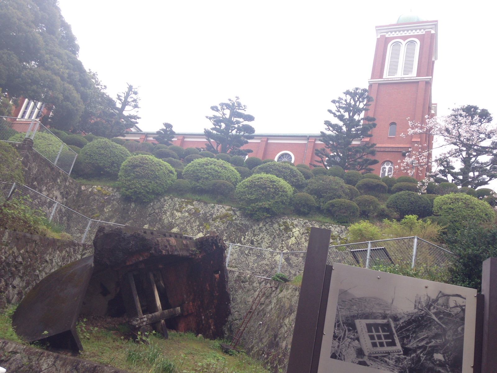
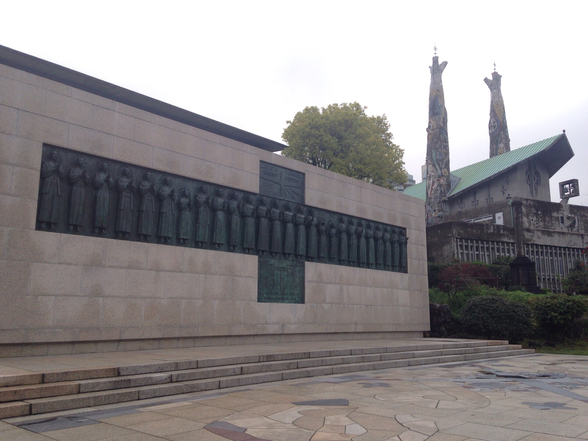

先日、長崎へ行ってきました。
長崎へ行くと何となく広島に似ているなぁって感じます。
呉と広島を併せたような町ですね。
あなたの長崎の旅行の参考になればいいです。
今回は、長崎のこんな場所へ行ってきました。
最初は、浦上天主堂です。
ここへ行っても、あまりみることのないこれは何だか分かりますか。
浦上天主堂は爆心地から北東へ約500mの地点なんです。

浦上天主堂を再建する時に発見された
浦上天主堂の旧鐘楼なんです。
原爆で鐘楼が飛んで土の中に埋まっていたそうです。
そして、現在の天主堂は昭和34（1959）年に再建されました。
旧天主堂は、完成するまでに30年の歳月をかけて建てられたそうです。
当時は赤レンガ造りの、東洋一といわれた大きな教会だったそうです。
さて、次はこれです。

これも、原爆で鳥居の半分が吹っ飛んだそうで、
そして、一本立ちした鳥居になったんですよ。
場所は、一本柱鳥居（山王神社）でした。
最後に、長崎キリシタンの歴史はとても悲しいものでした。

二十六聖人二十六聖人殉教の地です。
特に衝撃を受けたのは、三人の子供です。
長崎の珈琲もチェックしました。
長崎はまた行きたい町です。
異国が感じられるのは広島との大きな違いですね。
新しい美術館や出島も改修が進んでました。